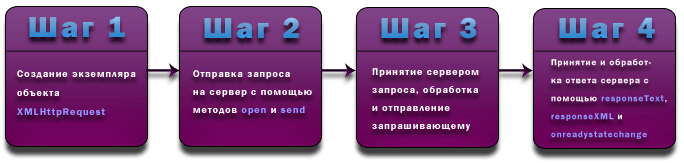

AJAX расшифровывается Asynchronous JavaScript And XML (Асинхронный JavaScript и XML). AJAX - это не новый язык программирования или разметки. AJAX - это эффективный способ совместного использования HTML, CSS, JavaScript и DOM.
AJAX - это набор технологий, которые поддерживаются веб-браузерами. AJAX использует:
Этапы выполнения AJAX запроса:

Created with the Personal Edition of HelpNDoc: Free CHM Help documentation generator